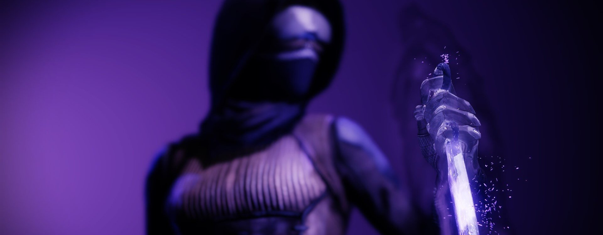
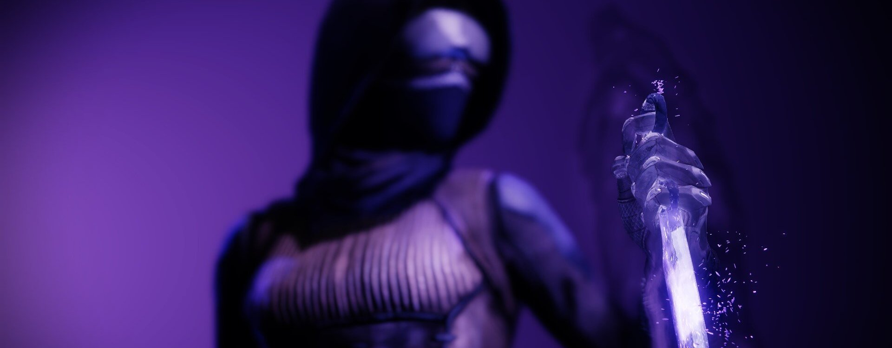

Le Chasseur
Les Chasseurs sillonnent les terres sauvages qui s'étendent au-delà de la Cité, exploitant la Lumière afin de découvrir les plus grands secrets de nos mondes perdus. Éclaireurs téméraires, ils sont des assassins furtifs, experts des couteaux et des armes de précision. Les Chasseurs tracent leur propre voie et respectent leur propre loi.
Je n'arrive pas à communier avec l'Abysse quand j'ai l'estomac plein. Je dois être mort de faim pour un résultat optimal. Je commence à ressentir des crampes et c'est là que je l'entends. Presque comme une voix qui murmure à travers moi. Quand j'ai appris cette leçon pour la première fois, je pensais que les missions matinales seraient rédhibitoires. Après tout, le petit déjeuner est le repas le plus important de la journée. Et pourtant, me voilà, au point du jour, perché sur un vieil arbre colossal, à fantasmer sur mon prochain casse-croûte. Il y a pire, comme poste de surveillance, et quitte à payer sa dette à un seigneur méprisable, autant avoir un endroit où s'asseoir.
J'ai les yeux rivés sur ma cible depuis des jours. Ce Kall a l'air parfaitement à l'aise, endormi en plein air, entouré de ses servants. Je suppose qu'ils constituent la dernière ligne de défense, mais ils ne sont toujours pas rendu compte de ma présence. Pas facile de trouver des servants efficaces.
Si ça ne tenait qu'à moi, j'aurais déjà ouvert le feu il y a plusieurs heures, mais je suis censé lancer un tir d'avertissement d'abord, pour qu'il sache ce qui l'attend. Comme ça, « il saura qui l'a tué ». Les Seigneurs de Guerre adorent envoyer leurs petits messages, et celui-ci tombera dans l'oreille d'un sourd s'il meurt dans son sommeil. Mais ce mec continue de ronfler. Je l'envie.
Ce qui me rappelle que j'ai découvert une autre astuce pour me connecter au mieux à cette bouche béante et vide qu'on appelle l'Abysse : l'épuisement. Quand je commence à glisser dans le sommeil, à la limite entre l'éveil et le rêve, je ressens l'absence. Je pourrais presque la toucher. Peu importe si c'est littéral ou métaphorique, l'Abysse aime que je sois vidé.
Il se réveille. C'est le moment de passer à l'action. Je tire une salve dans son lit. Le fameux bruit de succion éthéré se fait entendre. Le pauvre gars essaie de lutter mais il n'a aucune chance. Il cherche le tireur frénétiquement du regard, puis il comprend. À moi de jouer ! Boum, mission accomplie. Ça n'aurait pas été possible l'estomac plein.
Ronde de nuit
Tir de l'ombe: Carquois de Moebius
Attachez des ennemis à une laisse abyssale pour les affaiblir et les désorienter. Tirez deux salves de trois flèches abyssales qui cherchent les cibles proches. Le Tir de l'ombre rend les cibles volatiles et inflige des dégâts accrus aux cibles attachées. Vaincre des cibles tenues en laisse crée des orbes de puissance.
Tir de l'ombe: Traquenard
Attachez des ennemis à une laisse abyssale pour les affaiblir et les désorienter. Les laisses abyssales des Tirs de l'ombre attirent les cibles vers le point d'impact puis deviennent des pièges qui attendent leur proie. Les laisses abyssales ont une portée et une durée améliorées.
Lames spectrales
Invoquez une paire de lames abyssales mortelles et harcelez vos adversaires en vous parant d'un voile d'ombres.
- Grenades